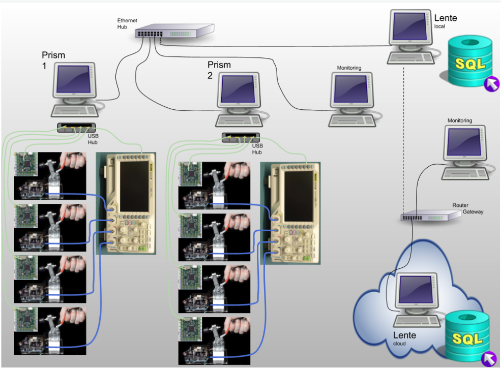

System¶
This section describes system related considerations to building your test system with Prism and Lente.
Architecture¶
This is a typical Sistemi system architecture layout. More complex systems are possible and shown later in this section.
Notes:
Local wired LAN for Prisms and Lente (local)
Wired LANs are more reliable and secure than wireless
This LAN should NOT have a connection to the internet
Prisms
only two are shown but there can be as many as needed
USB is used to connect to local test jigs and test equipment
Test equipment can be shared across test jigs at one Prism station
Support for sharing equipment across Prisms is not (yet) supported
Sends results to Lente
if a Lente is not online, testing can still continue, results will be staged for upload to Lente when it comes online
Lente
there should only be ONE per LAN
this computer should have a fixed IP address as every Prism is configured to look for Lente
Lente can be configured to send its results upstream to another Lente
Lente can be run in the cloud
Local Lente can be configured to send their results upstream to a cloud based Lente, thus all you results can end up in one place
As noted above, you don’t want to have your production LAN connected to the internet for security and reliablity reasons, therefore, at some regular interval you will remove a local Lente from the production LAN and connect it to the internet so it can find the upstream Lente and upload results to it
This is a more sophisticated Sistemi system plan.

Here two remote factories send their data to a cloud Lente so that Head Office can monitor all Result data.
Note in Factory 1 there are three production lines. Line 1 and 2 have their own local Lente and a monitoring station for viewing the dashboard. Line 3 does not have a local Lente and is using the factory Lente.
Results Flow¶
This diagram also shows a possible architecture of a Sistemi system. In this diagram the focus is on what happens to DUT results.
This architecture shows how Lente can be stacked on top of each other. Each Lente is aggregating more results that come from below it. In this case, two factories are supplying results to a central Lente.
What follows is a description of lables A-F…
A
Result JSON is created at Prism station and saved locally to a stage directory
B
At some point, Prism will attempt to contact Lente and send the result JSON to it.
If Lente is not connected/reachable, the file remains in stage.
C
If Lente indicates the file was received successfully, Prism result is moved from stage to the bkup folder.
D
Lente processes the result JSON into its (postgres) database.
Derr
If there was a processing error, the result JSON is stored in quarantine folder.
E
result JSON is stored in bkup folder if it was processed without error.
F
if this Lente is configured to have an upstream Lente, the result JSON is stored in stage folder
At this point, the process B-F repeats itself.
Notes:
The Result JSON is backed up at each level. These backups can be turned off if desired.
Any Lente dashboard can be accessed with web browser. The results that can be seen will be that which is local to that Lente.
Docker¶
Prism and Lente are running as Docker images/containers. Using Docker containers has two advantages,
Less impact of the local operating system setup, and/or installed libraries, modules, etc. on impacting Prism/Lente
Deployment (software updates) via Docker Hub
Docker is a large subject and there is a lot of online content. There are but a few Docker commands that you should know for the purposes of troubleshooting.
Check what is running¶
To determine what docker images are running,
$ docker ps
CONTAINER ID IMAGE COMMAND CREATED STATUS PORTS NAMES
c206788fcc35 sistemicorp/prism "python ./prism.pyc" 5 days ago Up 5 days 0.0.0.0:6590->6590/tcp, :::6590->6590/tcp prism
Key information
STATUS: how long has the image been running. If there has been a reset/crash, the running time will be less than what you expect.
Helper Docker Scripts¶
Prism and Lente each have a helper script for simplifying working with Docker.
The scripts can be found here:
~/git/scripts/public$ ll
total 36
drwxr-xr-x 4 martin martin 4096 Jun 7 17:21 ./
drwxrwxr-x 10 martin martin 4096 Jun 7 16:13 ../
-rwxr-xr-x 1 martin martin 2954 Apr 29 13:11 lente.sh* <---- Lente helper
drwxr-xr-x 5 martin martin 4096 Jun 7 16:09 prism/
-rwxr-xr-x 1 martin martin 4409 Apr 29 13:11 prism.sh* <---- Prism helper
-rw-r--r-- 1 martin martin 1619 Jun 7 17:21 settings.json
-rw-r--r-- 1 martin martin 121 Jun 7 16:56 VERSION
Each script will display a help if run with no arguments,
~/git/scripts/public$ ./prism.sh
Usage: prism.sh [flags] <command>
command:
start Start Prism
flags, --server=, -s (REQUIRED) Lente IP address. Use 'none' if no Lente.
--hostname=, -h Specify an alternative hostname for this computer (default martin-staric2)
--restart=, -r <always|no> (default no) 'always' will start Lente EVERY time the
computer is booted, which is typically used on a node that
is in actual deployment.
To disable restart, use 'docker update --restart=no prism'
and then reboot the node.
update Update the docker image, requires internet connection.
You will need to restart Prism with the start command.
stop Stop Prism
How to use these scripts in detail is covered in Deployment section.